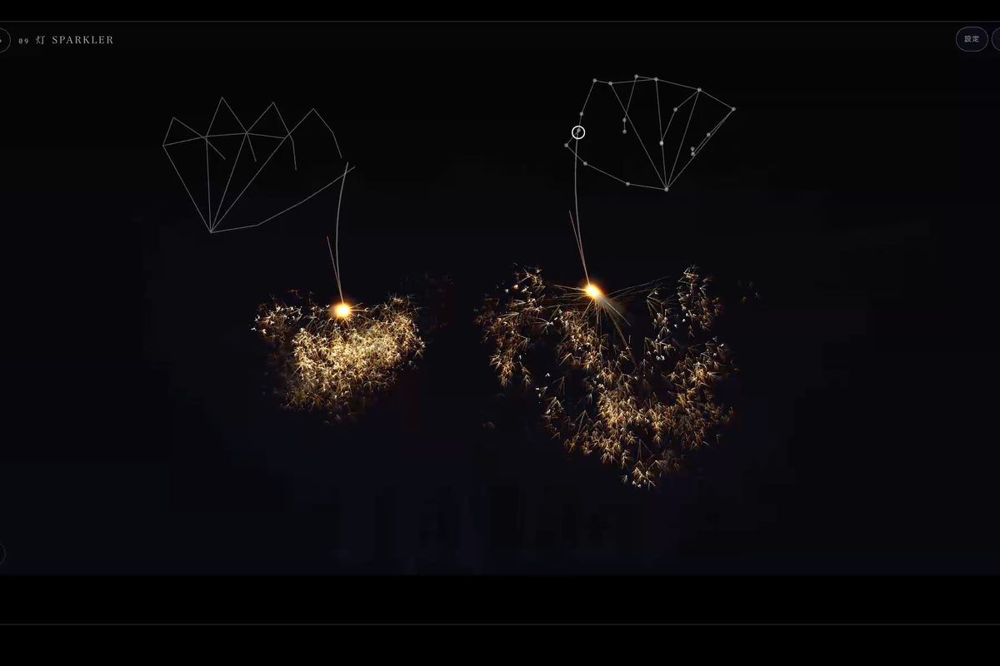
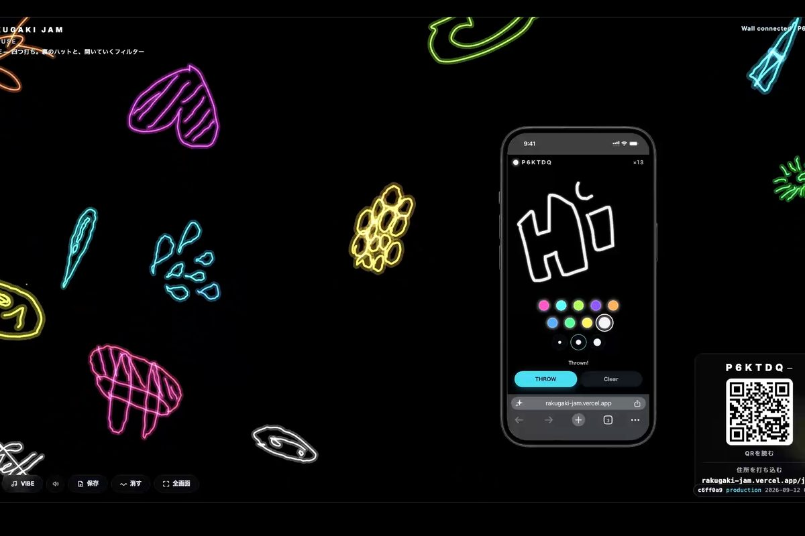
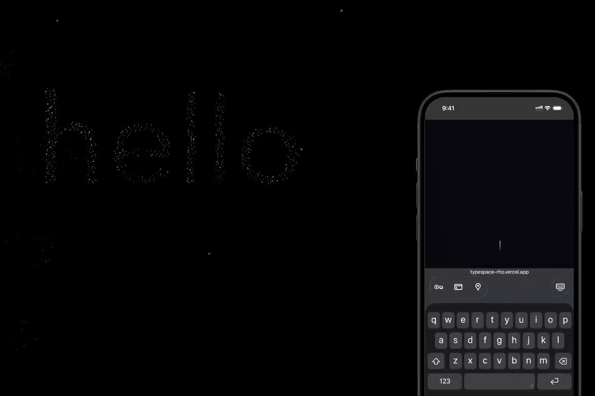
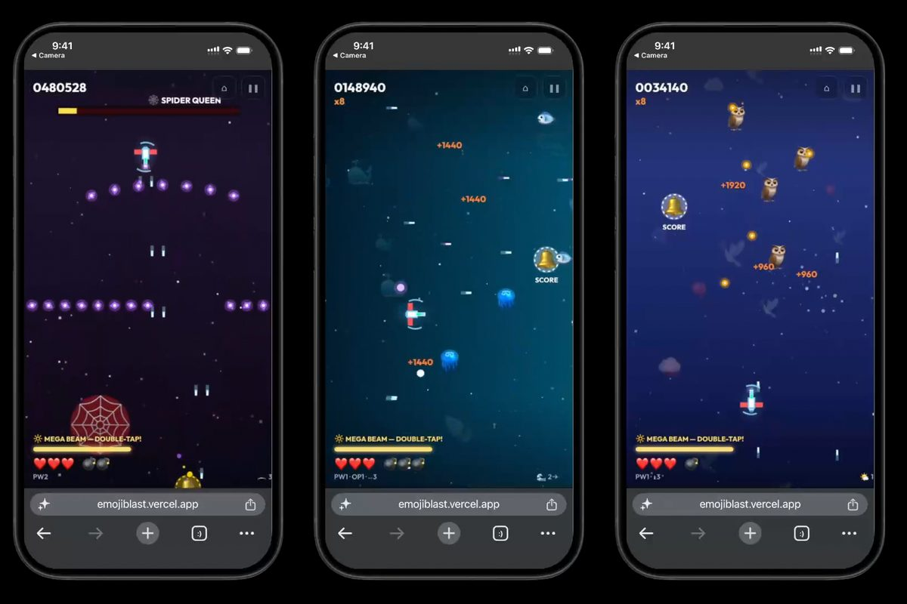
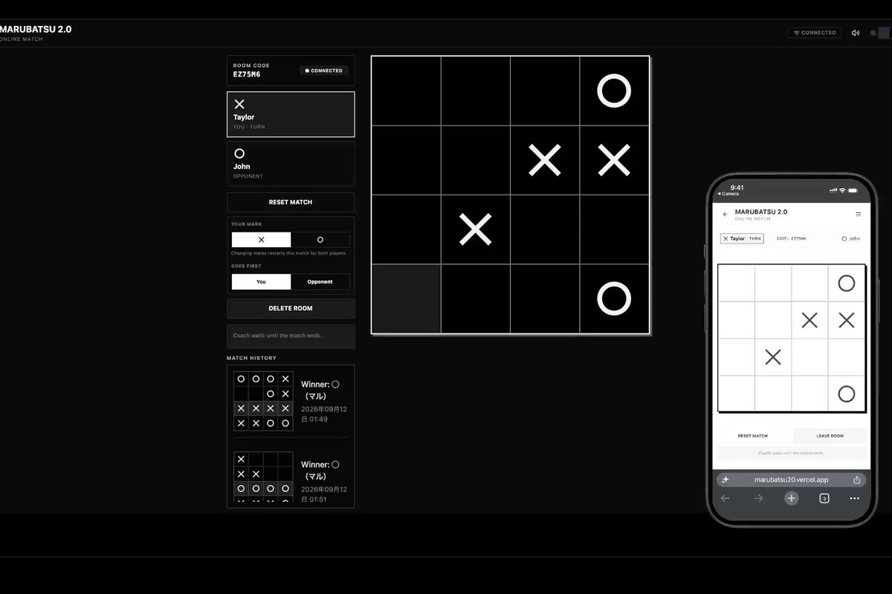
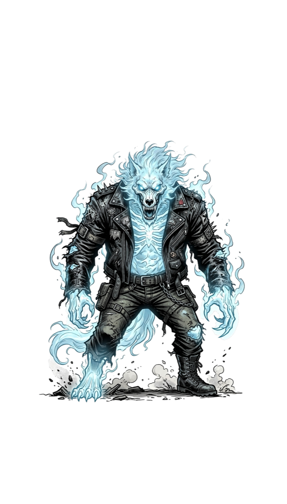

PointerポインタLive公開中
Resona響
Web animation · Pseudo-hapticsウェブアニメーション · 擬似ハプティクス
Motion that tells you what something means before you read a word.言葉を読む前に、動きが意味を伝える。
Try it ↗触ってみる ↗Input: a voice, a face, a drawn line. Output: a screen bigger than your phone. Almost none of it is AI.入力は声、表情、手描きの線。出力は手元より大きな画面。ほとんど AI ではありません。
8 projects 件
No winner, no score勝ち負けも点数もない

PointerポインタLive公開中
Web animation · Pseudo-hapticsウェブアニメーション · 擬似ハプティクス
Motion that tells you what something means before you read a word.言葉を読む前に、動きが意味を伝える。
Try it ↗触ってみる ↗Face表情In progress制作中
Face tracking · Web表情トラッキング · ウェブ
A game you play with your face.顔で遊ぶゲーム。

Handwriting手描きLive公開中
Snap Pair · Firebase RTDB · CanvasSnap Pair · Firebase RTDB · Canvas
Doodle on your phone, then fling it onto the wall screen.スマホで落書きして、壁の画面へ投げ込む。
Try it ↗触ってみる ↗
TypingタイピングLive公開中
Next.js · r3f · GLSL · Web AudioNext.js · r3f · GLSL · Web Audio
Type a word; it becomes a constellation, then drifts away.打った言葉が星座になり、やがて離れていく。
Try it ↗触ってみる ↗
Voice声In progress制作中
Snap Pair · Web Audio · CanvasSnap Pair · Web Audio · Canvas
Shout, and your voice bursts into comic-book onomatopoeia.叫ぶと、声が漫画の擬音になって弾ける。
Scan to join — no app, no accountsスキャンして参加。アプリも登録もなし

Two phones2 台のスマホLive公開中
HTML5 Canvas · WebRTC · single-fileHTML5 Canvas · WebRTC · 単一ファイル
Two phones, one emoji shooter. Shared lives, no server.スマホ 2 台の絵文字シューティング。残機は共有、サーバーなし。
Try it ↗触ってみる ↗
Two phones2 台のスマホShippedリリース済み
Next.js 16 · Firebase RTDB · GeminiNext.js 16 · Firebase RTDB · Gemini
Tic-tac-toe on a 4×4 board, two marks a turn.4×4 の盤で一手に二つ置く、○×ゲーム。
Try it ↗触ってみる ↗
Every phoneその場の全端末In progress制作中
Snap Pair · 27 illustrated rolesSnap Pair · 27 種の役職イラスト
Werewolf, dealt to each phone, played on one big screen.人狼。役職は各スマホへ、卓はひとつの大画面に。